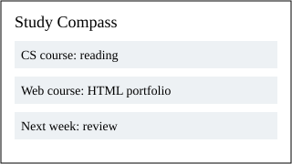
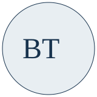
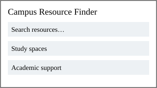

Study Compass

A proposed study planner that organizes assignments by course and deadline.
Read the project planBinteng Tan — Computer Science Portfolio

I’m a Computer Science student exploring how clear structure and thoughtful design make software easier to use. This portfolio introduces my background and records ideas I want to develop.
My current focus is semantic HTML and accessible web content. Learn more about me.
Planning-stage work: These are original project concepts for future development. The images are wireframes, and there are no completed implementations or measured results yet.

A proposed study planner that organizes assignments by course and deadline.
Read the project plan
A proposed directory to help students find study spaces and academic support.
Read the project plan